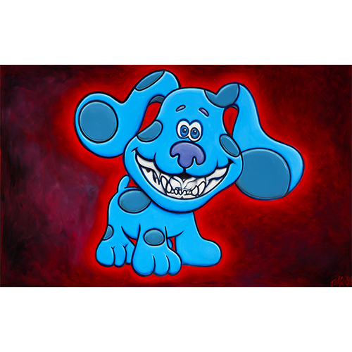
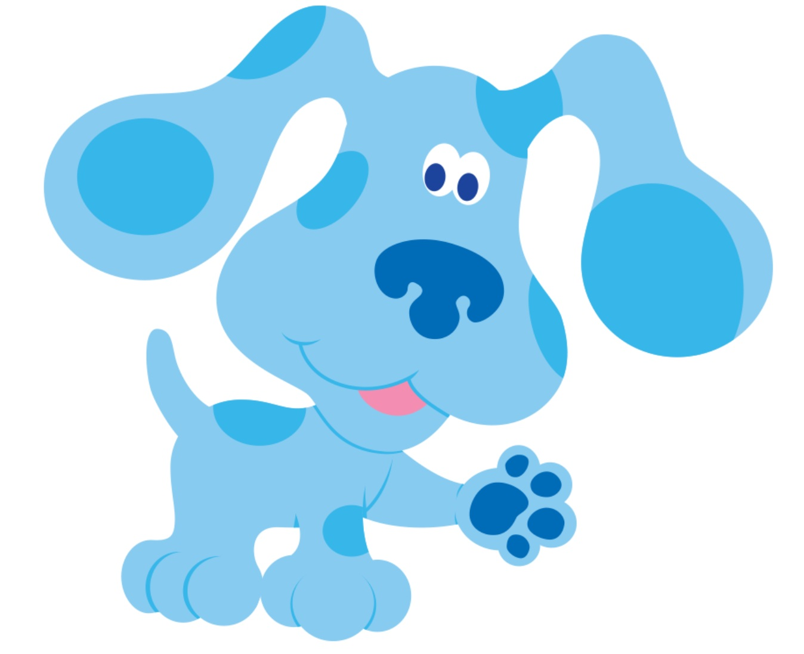

Exhibitions
Blue Chip Cat, Mortal Machine, New Orleans, Louisiana, US, May 27–June 20, 2022.
Notes
This work references Blue; a representative image is available here.
Ancillary Documentation


Blue Chip Cat, Mortal Machine, New Orleans, Louisiana, US, May 27–June 20, 2022.
This work references Blue; a representative image is available here.
